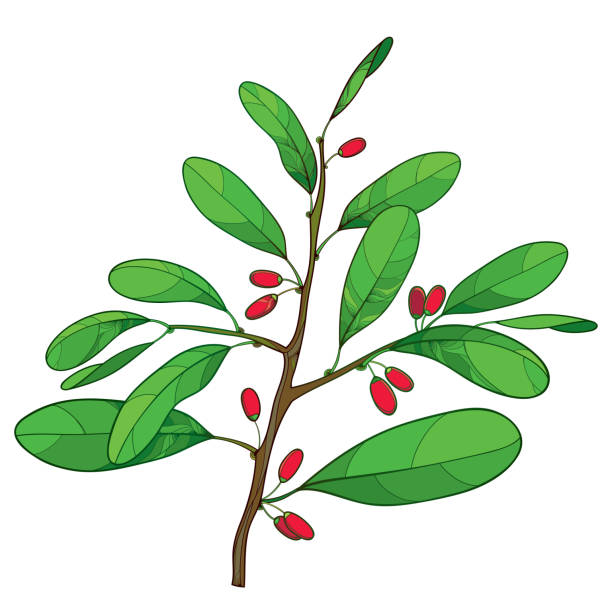

Colheita da Folha de Coca
As folhas de coca são colhidas manualmente, com cuidado, escolhendo apenas as mais verdes e aromáticas para garantir um sabor puro e natural.
Da folha à xícara, um sabor que nasce da natureza.
As folhas de coca são colhidas manualmente, com cuidado, escolhendo apenas as mais verdes e aromáticas para garantir um sabor puro e natural.
Após a colheita, as folhas são secas ao sol, selecionadas e ensacadas, preservando seu frescor e mantendo todas as propriedades naturais da planta.
Quando chegam à sua cozinha, basta infundir as folhas em água quente. Em poucos minutos, o aroma se espalha e o sabor suave se transforma em uma xícara de chá acolhedora.